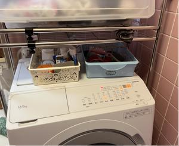

うるがいの話 ある日
最新: 工工四から楽譜へ展開【うるがいの話 ある日】とは 一日だけのプログです
『うるがいの話』の最新一日だけのプログで、通信料が少なく経済的だ。カニの画像をクリックすると全ての日付が載る『うるがいの話』サイトを表示します
|
|
【うるがいの話】 うるがい(ｳﾙｶﾞｲ urugai)とは、『もずくがに』の名前でとても大きくなります。 |
|---|---|
|
|
【カミマヤーの話】 猫のことを方言でマヤーといいます。カミマヤー（kamimayaa）とは、神の猫のことです。 |
|
【たながぁの音楽】 たながぁ（ﾀﾅｶﾞｰ tanagaa）とは手長えびのことで、何種類かあり大きいのは車 エビぐらいになります。 |

|
【ぶながぁの話】 ぶながぁ(ﾌﾞﾅｶﾞｰ bunagaa)とは、赤い髪の毛、赤い身体、そして身長は１ｍ２０ｃｍ ぐらい、川の蟹を食べているの目撃された。場所は沖縄県国頭郡大宜味村のと ある村僕の隣近所に住んでいる爺さんから、聞いた話です。 |
|
|
【ギーマの話】 ギーマ(giima)とは、山原の里山に咲くスズランに似た、 花を付けます。実は食べられます、 気が付くと口の周りが紫になっています。 |
2025年12月15日 (月）工工四から楽譜へ展開
15:17
使っていみた新しい洗濯機、脱水が弱い。ヨメ曰く、機能が少し
落ちるらしい。マ、ね、いまさらね。そうそう、洗濯機を挟む形
で収納のラックみたいな物が、あるのだが新しい洗濯機でも揺れ
が、スゴイ！。ウーン、今朝からずーとラックをみる、幅が調整
できる事が分かり、幅を広げた。洗濯機を挟まないので当然揺れ
ない。ただ、ラックが洗濯機を挟んでいたので安定していたが、
今度は、固定するものがないのでブラブラ・・・、そこでラック
の枠に部品を壁と固定することで対応（完璧ではないが）。

アっと、このことはメモって置かないとと思った。洗濯機の傍に
５センチほどの長方形の黒いパッキンが、あった。ピーン、『あ
の洗濯機傾いているか、チェックしてもらえますか』と尋ねると
業者の人は、傾きを器具でチェックする。傾いていたのでしょう
先ほどのパッキンを沈んでいた箇所に、置いて傾きを調整した。
言わなければ・・・・、洗濯機を置いている場所はもともとはお
風呂場だったので、水平でなかったのかも。
あと洗濯機の幅は５９センチ、家への入口の幅は６４センチだっ
た。洗濯機を入れるのをみていたが、ギリギリだった。
毎日みているとあるプログ
もうすぐクリスマスです。
この時期に街で流れる音楽には、今から41年前にヒットした英国
の歌手グループ、「ワム」（Wham!）の『Last Christmas（ラスト
・クリスマス）』であることに驚きます。
多くの読者が生まれて無い時代にヒットした曲が、日本では今で
も何度も流れていることに深意を感じます。
・・・・・・・
今年は、本当に過去の時代の終焉の「The Last Christmas」であ
り、物質欲の時代から、心の時代へ、切り替わる節目だと言えま
す。
オ、いまその曲をユーチューブ動画にすべく、頑張っているとこ
ろで少し驚く。
工工四から楽譜へ展開するプログラムを、作成しました。暇人で
す。